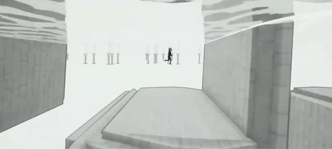
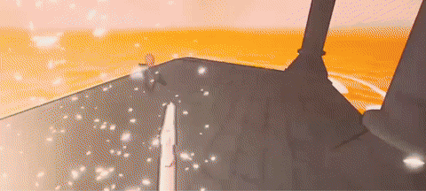
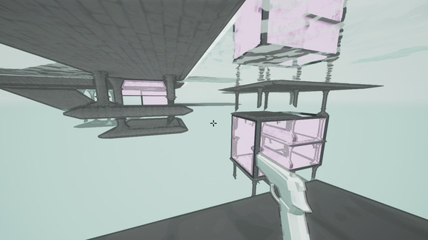
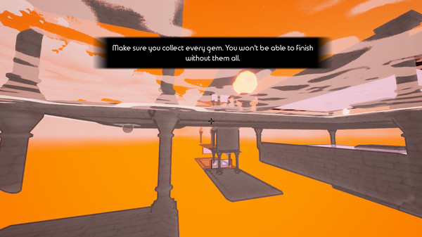

The Reflection (solo project)
For The Reflection, I tried to explore spaces that wouldn’t be possible in real life. I settled on a retroreflective space that mirrors the geometry across a plane. This allows for interesting combat and platforming scenarios that would not be possible in a traditional game space.


Stylized Mind-Bending Geometry


The Reflection was my first Steam release and explores impossible retroreflective geometry. I liked the idea of jumping into a reflection to shoot an enemy who was previously behind a shield on the ground but is now reflected on the ceiling (where the shield no longer breaks line of sight). Creating levels for this game required replicating all level geometry, enemy movements, and projectiles across a plane. For moving objects, I used dynamic mesh slicing to create a convincing reflection visual. An HLSL outline shader, stylized water material, and vibrant colors create a surreal environment that complements the mind-bending gameplay.